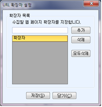

평가 환경 설정
KW3C2.0을 이용한 웹표준 평가에 적용되는 기본 값을 설정합니다.
1) URL 수집 환경 설정
KW3C2.0 프로그램을 사용하여 웹표준 평가를 하기 위해서는 가장 먼저 웹표준 검사에 필요한 작업환경을 설정해야 합니다. 설정 방법은 다음과 같습니다.
* 이 기능은 메뉴 및 툴바 아이콘을 이용하여 사용할 수 있습니다.
(1) 메뉴의 [설정] ->[웹소스 수집방법 설정] 혹은 [설정] 아이콘을 선택합니다.
(2) 아래 그림과 같은 ‘URL수집환경’ 창이 나타나면 각 항목을 입력한 후 저장합니다.
‘URL수집환경’ 창의 입력항목의 의미는 다음과 같습니다.
- 디렉토리 설정 : 프로젝트 파일의 저장, 평가 결과 등이 저장되는 경로를 설정합니다. 설정된 경로(디렉토리)는 사용자가 생성한 프로젝트와 평가 결과 등 관련 파일이 이 경로에 저장됩니다. 따라서 프로젝트를 새로 만들거나 재편집, 프로젝트 삭제, 프로젝트 평가결과 보기를 수행하면 설정된 프로젝트 경로의 프로젝트를 보여줍니다.
- 웹 소스 다운로드 시간 설정 : 웹페이지의 링크를 수집하기 위하여 하나의 웹페이지 소스를 사용자 컴퓨터로 다운로드 받는데 소요되는 걸리는 시간을 설정합니다. 다운로드 시간이 설정된 값을 초과하면 해당 웹페이지는 소스를 다운받을 수 없는 페이지로 간주합니다. 웹 서버의 상태나 네트워크의 속도에 따라서 웹페이지를 다운로드하는 시간이 서로 다를 수 있습니다. 웹표준 평가에 걸리는 시간이 과도하게 길어지는 것을 방지하기 위하여 KW3C2.0에서는 웹페이지 다운로드 시간을 설정할 수 있습니다. 설정한 응답시간을 초과할 때까지 웹페이지 소스를 다운로드하지 못한 경우에는 이 페이지의 소스 수집을 중단하고 다음 페이지를 검사합니다. 서버나 네트워크 속도가 빠른 환경에서는 응답시간을 짧게 설정하고 반대의 경우에는 응답시간을 길게 설정함으로써 환경에 따른 효율을 높일 수 있습니다.
- 응답 대기 시간의 범위 : 10~60초
- 기본값 : 20초
- 웹 소스 수집 설정 : 수집할 최대 웹페이지 수를 설정합니다. 수집할 웹 페이지가 적은 경우에는 설정한 값보다 적은 수의 웹페이지가 수집될 수 있습니다. 수집할 웹페이지 수가 늘어날수록 평가 시간이 늘어나므로 수집할 웹페이지 수를 적절히 결정하는 것이 좋습니다.
- 최대 페이지수 제한: 하나의 웹사이트로부터 수집할 웹페이지의 최대 값
- 범위 : 1~100,000
- 기본값 : 100
- 최대 페이지수를 0으로 설정하면 수집 페이지수를 무한대로 설정하여 해당 웹사이트에 포함된 모든 웹페이지를 수집하고 평가하게 됩니다.
- 최대 깊이 제한 : 수집할 웹페이지 URL 경로의 깊이 제한 값으로, 홈페이지로부터 몇 단계의 경로 깊이를 지닌 웹페이지까지 수집할 것인가를 지정합니다.
- 범위 : 1~20
- 기본값 : 20
- 동일 게시판 페이지 수집 수: 게시판으로 분류되는 웹페이지가 반복적으로 수집되는 것을 방지하기 위한 값을 설정합니다. 따라서 이 값은 동일 게시판에 포함된 서로 다른 내용의 게시물 페이지를 몇 개까지 수집할 것인가를 지정하는 것입니다.
- 범위 : 1~10
- 기본값 : 5
2) URL 확장자 설정
최근 웹페이지의 확장자로 사용되는 파일 확장자가 매우 다양해졌습니다. URL 확장자 설정 기능을 이에 대비하여 평가시 수집할 웹페이지 확장자를 등록하는 기능입니다. 이미 알려진 웹페이지 확장자(예를 들어 HTML, ASP, JSP등)는 등록할 필요가 없습니다. 따라서 자주 사용하는 것이 아닌 특별한 확장자를 사용하는 경우에만 등록하면 됩니다.
또한 KW3C2.0은 자체적으로 웹페이지의 확장자를 수집하여 등록하는 인공지능 기능이 제공됩니다. 따라서 처음에는 확장자가 특이하여 수집되지 않더라도 다음 평가시에는 평가 가능한 웹페이지로 분류되므로 확장자를 반드시 등록할 필요는 없습니다.
이 기능은 자주 사용하는 기능이 아니므로 메뉴를 통해서만 실행할 수 있습니다.
(1). 메뉴의 [설정]-[웹페이지 확장자 설정]을 선택합니다.
(2). 아래 그림과 같은 [URL 확장자 설정]창이 열리면 파일 확장자를 입력하고 [추가] 버튼을 클릭하여 목록에 추가합니다. 파일 확장자를 입력할 때 확장자임을 구분하는 점(.)을 입력하거나 입력하지 않아도 됩니다.

3) 웹표준 평가환경 설정
입력한 URL이나 파일에 적용되는 웹표준 평가 방법의 기본 값을 설정합니다. 이 기능은 자주 사용하는 기능이 아니므로 메뉴를 이용하여 사용할 수 있습니다.
(1). 메뉴의 [설정]-[평가항목 설정]을 선택합니다.
(2). 다음 그림과 같이 [평가항목 설정]창이 나타나면 해당 항목을 입력합니다.
(3). 항목 입력
- HTML검사 : 웹표준 평가시 프로젝트에 적용할 문서의 인코딩 방법과 적용 문서 형식의 기본 값을 설정합니다. 이 값은 W3C 웹표준 진단방법의 인코딩 및 문서 형식과 동일합니다.
- 적용 인코딩 방법: 다음의 항목 중에서 선택할 수 있습니다.
- (자동 선택) : 기본 값. 웹 서버가 제공하는 정보를 이용합니다.
- utf-8 (Unicode, worldwide) : 웹 페이지를 UTF-8로 인코딩 합니다.
- utf-16 (Unicode, worldwide): 웹 페이지를 UTF-16으로 인코딩 합니다.
- euc-kr (한국어): 웹 페이지를 EUC-KR로 인코딩 합니다.
- ksc_5601 (한국어): 웹 페이지를 KS C 5601로 인코딩 합니다.
- 적용 문서 형식: 다음의 항목 중에서 선택할 수 있습니다.
- (자동 선택) : 기본 값. 웹문서에서 지정한 DTD 정보를 이용합니다.
- XHTML 1.0 : 웹문서의 DTD 정보를 ‘XHTML 1.0’으로 지정합니다.
- HTML 4.01 : 웹문서의 DTD 정보를 ‘HTML 4.01’으로 지정합니다.
- XHTML 1.1 : 웹문서의 DTD 정보를 ‘XHTML 1.1’로 지정합니다.
- HTML 3.2 : 웹문서의 DTD 정보를 ‘HTML 3.2’로 지정합니다.
- HTML 2.0 : 웹문서의 DTD 정보를 ‘HTML 2.0’으로 지정합니다.
- HTML5 : 웹문서의 DTD 정보를 ‘HTML5’로 지정합니다. 단 HTML5는 2012년 8월 현재 규격이 완성되지 않아 실험적인 환경만을 지원하므로 완전한 평가가 이루어지지는 않습니다.
- CSS 검사 : 스타일 시트 표준 평가시 프로젝트에 적용할 스타일 시트 형식의 기본 값을 설정합니다. 이 값은 W3C CSS 형식과 동일합니다.
- 적용 CSS 규격: 다음의 항목 중에서 선택할 수 있습니다.
- 프로파일 없음 : 적용되는 CSS 규격을 지정하지 않습니다.
- CSS 레벨 1 : 적용되는 CSS 규격을 ‘CSS 레벨 1’로 지정합니다.
- CSS 레벨 2 : 적용되는 CSS 규격을 ‘CSS 레벨 2’로 지정합니다.
- CSS 레벨 2.1 : 적용되는 CSS 규격을 ‘CSS 레벨 2.1’로 지정합니다.
- CSS 레벨 3 : 적용되는 CSS 규격을 ‘CSS 레벨 3’으로 지정합니다.
- SVG : 적용되는 CSS 규격을 ‘SVG’로 지정합니다.
- SVG Basic : 적용되는 CSS 규격을 ‘SVG Basic’으로 지정합니다.
- SVG Tiny : 적용되는 CSS 규격을 ‘SVG Tiny’로 지정합니다.
- 모바일 : 적용되는 CSS 규격을 ‘mobile’로 지정합니다.
- ATSC TV 프로필 : 적용되는 CSS 규격을 ‘ATSC TV 프로필’로 지정합니다.
- TV 프로필 : 적용되는 CSS 규격을 ‘TV 프로필’로 지정합니다.